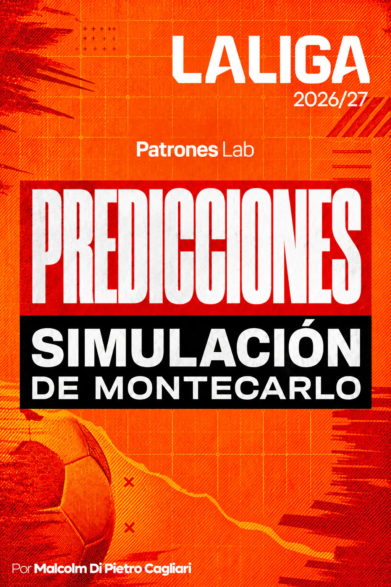

ANÁLISE DESPORTIVA · PROJETO 15

Projeto 18 · Análise de Futebol
Simulação de Monte Carlo · Previsões para a LaLiga 2026/27
O projeto simula 1.000.000 de cenários de LaLiga 2026/27 a partir de ratings Elo e de um modelo Davidson para calcular as probabilidades de vitória em casa, empate e vitória fora. Com essas probabilidades, estima as hipóteses de conquistar o título, terminar no Top 4 ou ser despromovido, juntamente com os pontos e as posições no final da época.
CONTEXTO E OBJETIVO
O projeto analisa LaLiga 2026/27 para estimar a classificação final das suas 20 equipas. As probabilidades são calculadas jogo a jogo e depois utilizadas para simular o desenvolvimento da época, com especial atenção ao título, aos lugares no Top 4 e à despromoção.
A base histórica reúne jogos de LaLiga das épocas 2021/22 a 2024/25, juntamente com os ratings Elo anteriores a cada encontro. A análise relaciona a diferença Elo entre os adversários com a frequência de vitórias em casa, empates e vitórias fora. Com essa informação, ajusta-se um modelo Davidson que também incorpora a vantagem de jogar em casa e a tendência geral para o empate.
O calendário de LaLiga 2026/27, os resultados já registados e os ratings Elo atualizados completam os dados de cada atualização. Os pontos obtidos mantêm-se na classificação e a simulação resolve os jogos por disputar para estimar a distribuição final de pontos, posições e probabilidades de qualificação.
MODELO E SIMULAÇÃO
Preparação dos dados e ratings Elo
Foram preparados os resultados históricos de LaLiga e verificadas as datas, as equipas, a condição de jogar em casa ou fora, os golos e o resultado de cada jogo. A seleção histórica abrange quatro épocas completas, com 1.520 jogos, e permite trabalhar com um critério consistente para resultados e ratings.
Os ratings Elo fornecem uma medida da força relativa de cada equipa. Para cada jogo utiliza-se a diferença entre o rating da equipa da casa e o da visitante: uma diferença positiva favorece a equipa da casa e uma negativa favorece a visitante. Esta diferença é a principal entrada do modelo de probabilidades.
DIFERENÇA ENTRE RATINGS ELO
\Delta Elo = Elo_{L}-Elo_{V}
O Elo da equipa da casa e o Elo da visitante representam os ratings atribuídos às duas equipas. A diferença resume a vantagem desportiva inicial antes de incorporar o efeito de jogar em casa.
As épocas 2021/22 a 2023/24 foram utilizadas para estimar os parâmetros iniciais. A época 2024/25 ficou reservada para uma validação temporal, que permitiu comparar as probabilidades estimadas com os resultados realmente observados. Depois, o modelo foi reestimado com as quatro épocas históricas para aplicar os seus parâmetros a LaLiga 2026/27.
Probabilidades dos jogos com Davidson
O modelo Davidson transforma a diferença Elo em três probabilidades: vitória em casa, empate e vitória fora. Para o ajustar, procuram-se os valores de dois parâmetros que melhor explicam os resultados históricos: H representa o efeito de jogar em casa e ν regula a frequência dos empates. A estimação é feita por máxima verosimilhança, utilizando o resultado observado de cada jogo.
Primeiro, combina-se a diferença Elo com o efeito de jogar em casa para obter a força relativa da equipa da casa perante a visitante. Este valor é incorporado nas expressões do modelo e permite repartir a probabilidade pelos três resultados possíveis.
FORÇA RELATIVA DA EQUIPA DA CASA
r = 10^{(\Delta Elo+H)/400}
r representa a força relativa da equipa da casa; ΔElo é a diferença entre ratings e H o parâmetro estimado da vantagem de jogar em casa. A transformação conserva a escala utilizada pelos ratings Elo.
VITÓRIA EM CASA, EMPATE E VITÓRIA FORA
P(L)=\frac{r}{r+1+\nu\sqrt{r}}
P(E)=\frac{\nu\sqrt{r}}{r+1+\nu\sqrt{r}}
P(V)=\frac{1}{r+1+\nu\sqrt{r}}
P(L), P(E) e P(V) representam as probabilidades de vitória em casa, empate e vitória fora. O parâmetro ν intervém diretamente na probabilidade de empate. As três probabilidades somam 1 para cada jogo.
A validação de 2024/25 incluiu a exatidão da previsão mais provável, log-loss e Brier score. As probabilidades médias de cada resultado foram também comparadas com as frequências observadas e com uma referência baseada nas frequências históricas. Após essa avaliação, os parâmetros foram reestimados com a amostra completa de quatro épocas e mantidos para as projeções da época atual.
Simulação de Monte Carlo de LaLiga
LaLiga tem 20 equipas e um calendário de 380 jogos. Em cada atualização conserva-se o resultado real dos encontros já disputados e utilizam-se as probabilidades Davidson para simular os jogos por disputar. Cada jogo simulado termina em vitória em casa, empate ou vitória fora, segundo as suas probabilidades individuais.
Com esses resultados atribuem-se três pontos por vitória e um por empate. Os pontos simulados somam-se aos que cada equipa já conquistou, formando uma classificação final para essa repetição. Quando duas equipas terminam com os mesmos pontos, o procedimento utiliza um desempate aleatório como aproximação para ordenar as posições.
PONTOS FINAIS POR EQUIPA
\mathrm{Puntos}_{i}^{\mathrm{final}}=\mathrm{Puntos}_{i}^{\mathrm{actuales}}+\mathrm{Puntos}_{i}^{\mathrm{simulados}}
Os pontos finais de cada equipa obtêm-se somando os pontos atuais e os conquistados nos jogos por disputar dessa simulação.
Este processo repete-se 1.000.000 de vezes. Cada época simulada produz uma classificação completa; em conjunto, as simulações permitem medir quantas vezes uma equipa conquista o título, termina entre as quatro primeiras ou ocupa um dos três lugares de despromoção. As frequências convertem-se em probabilidades estimadas.
PROBABILIDADE ESTIMADA POR SIMULAÇÃO
\widehat{P}(A)=\frac{N_A}{N}
N=1{.}000{.}000
N representa o número total de simulações e Nₐ indica em quantas se verifica o evento analisado. A proporção permite estimar, por exemplo, a hipótese de conquistar o título, terminar no Top 4 ou ser despromovido.
As matrizes completas de pontos e posições são conservadas para estudar outros resultados: posição mais frequente, amplitude das distribuições, diferença de pontos entre equipas e número de pontos associado aos lugares decisivos da classificação.
RESULTADOS E APRENDIZAGEM
A análise estima, para cada uma das 20 equipas, as hipóteses de conquistar o título, terminar no Top 4 ou ser despromovida, além dos pontos e das posições esperados. As distribuições completas das posições finais, as medianas e os percentis permitem observar a variabilidade desses resultados entre as épocas simuladas.
A análise incorpora as probabilidades de vitória em casa, empate e vitória fora para os jogos por disputar. Ao nível da época, calculam-se os intervalos habituais de pontos, a probabilidade de ocupar cada posição e referências para os pontos associados ao campeão, ao quarto lugar e à zona de despromoção. Desenvolvem-se também comparações diretas entre equipas.
Cada atualização combina os novos resultados de LaLiga com ratings Elo atualizados, recalcula as probabilidades dos jogos por disputar e volta a executar a simulação. As saídas são organizadas por data de atualização para comparar como as projeções mudam à medida que se disputam as jornadas.
O projeto integra a preparação e validação dos dados, a utilização de ratings Elo, a estimação das probabilidades dos jogos com Davidson e a simulação da época. À medida que se incorporam novos jogos, este processo permite atualizar as projeções e apresentar tanto a expectativa central de pontos e posições como a sua variabilidade entre as simulações.